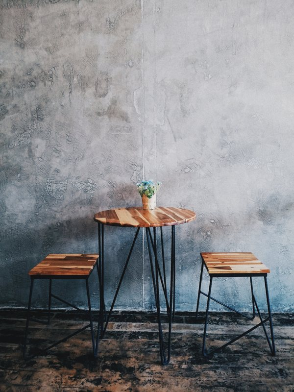
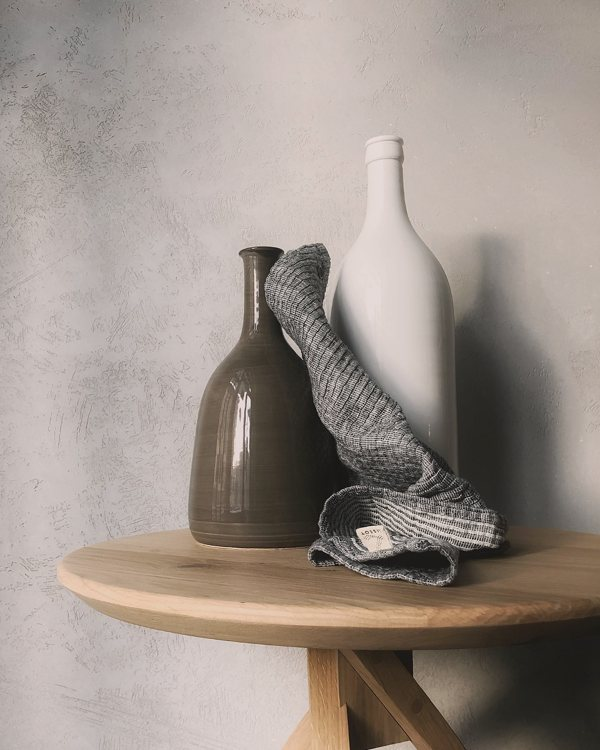
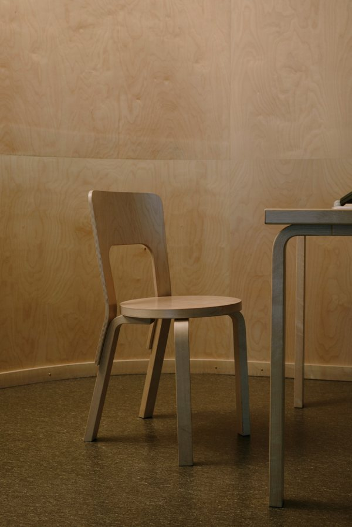

I butik
På den här sidan visas de produkter som vi för tillfället har inne i vår butik. Vi tar även emot beställningar på möbler. Läs mer om det på sidan beställning.
Fika i perspektiv
Nätt grupp med pall och bord gjort i ask med ben i stål.
Skapad av: Niklas Persson


Bordet Milo
Enkelt bord som passar både som avlastningsyta och som litet matbord. Hela bordet är gjort i björk.
Skapat av: Niklas Persson
Trygga stolen
Trygga stolen är utformat för ett funktionellt hem. Den är enkelt skapad i svensk björk.
Skapad av: Henrik Dahl
